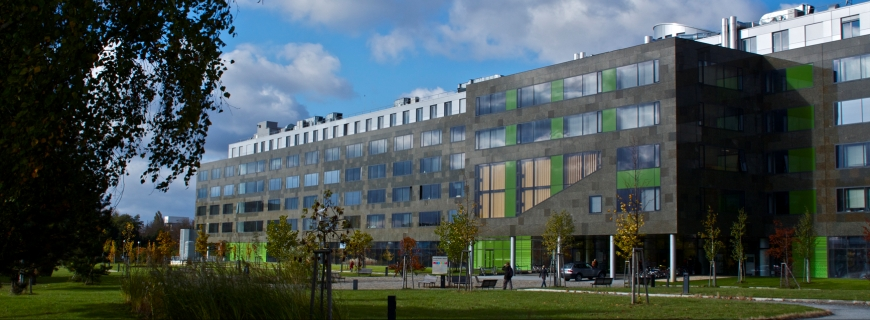
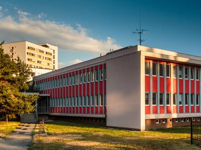
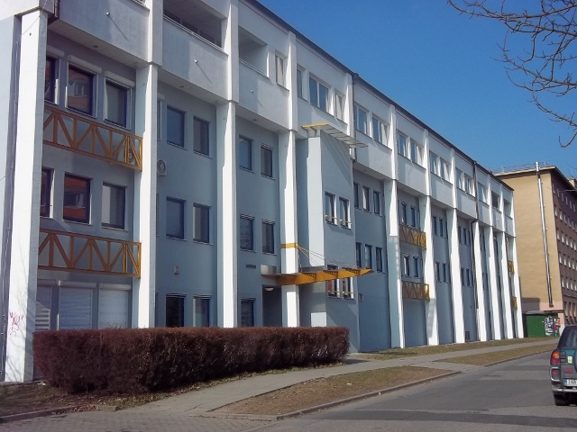
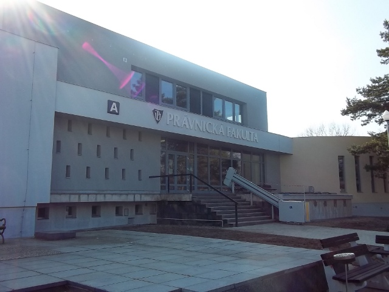
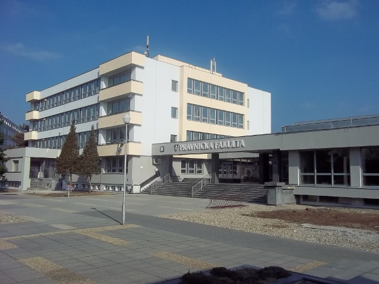

<!DOCTYPE html>
<html>
<head>
	
	<title>Olomoucké traily</title>

	<meta charset="utf-8" />
	<meta name="viewport" content="width=device-width, initial-scale=1.0">
	
	<link rel="shortcut icon" type="image/x-icon" href="docs/images/favicon.ico" />
  <link rel="stylesheet" href="https://unpkg.com/leaflet@1.3.1/dist/leaflet.css" integrity="sha512-Rksm5RenBEKSKFjgI3a41vrjkw4EVPlJ3+OiI65vTjIdo9brlAacEuKOiQ5OFh7cOI1bkDwLqdLw3Zg0cRJAAQ==" crossorigin=""/>
  <link href='https://api.mapbox.com/mapbox.js/plugins/leaflet-fullscreen/v1.0.1/leaflet.fullscreen.css' rel='stylesheet' />
  <link rel="stylesheet" href="http://maxcdn.bootstrapcdn.com/font-awesome/4.3.0/css/font-awesome.min.css"/>
  <link rel="stylesheet" href="leaflet.zoomhome.css"/>
  <link rel="stylesheet" type="text/css" href="https://cdn.rawgit.com/gokertanrisever/leaflet-ruler/master/src/leaflet-ruler.css">
         
  <script src="https://unpkg.com/leaflet@1.3.1/dist/leaflet.js" integrity="sha512-/Nsx9X4HebavoBvEBuyp3I7od5tA0UzAxs+j83KgC8PU0kgB4XiK4Lfe4y4cgBtaRJQEIFCW+oC506aPT2L1zw==" crossorigin=""></script>
  <script src='https://api.mapbox.com/mapbox.js/plugins/leaflet-fullscreen/v1.0.1/Leaflet.fullscreen.min.js'></script>
  <script src="leaflet.zoomhome.min.js"></script>
	<script src="https://cdn.rawgit.com/gokertanrisever/leaflet-ruler/master/src/leaflet-ruler.js"></script>
  
  <style>
  body {
            height: 100%;
            margin: 0;
            line-height: 1.4;
            font-family: "Arial", "Arial", sans-serif !important;
            font-size: 1vw;
        }
  #map { width: 800px; height: 500px; }
.info { padding: 6px 8px; font: 14px/16px Arial, Helvetica, sans-serif; background: white; background: rgba(255,255,255,0.8); box-shadow: 0 0 15px rgba(0,0,0,0.2); border-radius: 5px; } .info h4 { margin: 0 0 5px; color: #777; }
.legend { text-align: left; line-height: 18px; color: #555; } .legend i { width: 18px; height: 18px; float: left; margin-right: 8px; opacity: 0.7; }</style>

</head>
<body>

<div id="map" style="width: 100%; height: 100vh;"></div>

<script src="skm.js" type="text/javascript"></script>

<script>
	var fakulty = L.layerGroup();
  
  var orangeIcon = L.icon({
    iconUrl: 'prf_logo.png',
    iconSize:     [38, 38], // size of the icon
  });
  
  var purpleIcon = L.icon({
    iconUrl: 'pf_logo.png',
    iconSize:     [38, 38], // size of the icon
  });

	L.marker([49.59231483376201, 17.263346314430237], {icon: orangeIcon}).bindPopup('<b style="color: #FF6600">tř. 17. listopadu 12</b><br><br><a href="http://prf.upol.cz" style="color: #0082FF">Přírodovědecká fakulta<a><br><br>').addTo(fakulty),
	L.marker([49.59380484862453, 17.265406250953674], {icon: orangeIcon}).bindPopup('<b style="color: #FF6600">tř. 17. listopadu 50</b><br><br><a href="http://prf.upol.cz" style="color: #0082FF">Přírodovědecká fakulta<a><br><br>').addTo(fakulty),
	L.marker([49.593451908727985, 17.26578712463379], {icon: orangeIcon}).bindPopup('<b style="color: #FF6600">tř. 17. listopadu 50A</b><br><br><a href="http://prf.upol.cz" style="color: #0082FF">Přírodovědecká fakulta<a><br><br>').addTo(fakulty),
	L.marker([49.59011710915969, 17.261956930160522], {icon: purpleIcon}).bindPopup('<b style="color: #663366">tř. 17. listopadu 6</b><br><br><a href="http://pf.upol.cz" style="color: #0082FF">Právnická fakulta<a><br><br>').addTo(fakulty),
  L.marker([49.59056918085385, 17.262697219848633], {icon: purpleIcon}).bindPopup('<b style="color: #663366">tř. 17. listopadu 8</b><br><br><a href="http://pf.upol.cz" style="color: #0082FF">Právnická fakulta<a><br><br>').addTo(fakulty);
  
  var mbAttr = 'Map data &copy; <a href="http://openstreetmap.org">OpenStreetMap</a> contributors, ' +
			'<a href="http://creativecommons.org/licenses/by-sa/2.0/">CC-BY-SA</a>, ' +
			'Imagery © <a href="http://mapbox.com">Mapbox</a>' + ' ' + '&copy Oldřich BITTNER, Ondřej MRKLOVSKÝ, Tomáš PROCHÁZKA, Jakub ŽEJDLÍK, Olomouc 2021',
		mbUrl = 'https://api.tiles.mapbox.com/v4/{id}/{z}/{x}/{y}.png?access_token=pk.eyJ1IjoibWFwYm94IiwiYSI6ImNpejY4NXVycTA2emYycXBndHRqcmZ3N3gifQ.rJcFIG214AriISLbB6B5aw';
    
  var OpenStreetMap_Mapnik = L.tileLayer('https://{s}.tile.openstreetmap.org/{z}/{x}/{y}.png', {
	maxZoom: 19,
	attribution: '&copy; přispěvatelé <a href="http://www.openstreetmap.org/copyright">OpenStreetMap</a> &copy Oldřich BITTNER, Ondřej MRKLOVSKÝ, Tomáš PROCHÁZKA, Jakub ŽEJDLÍK, Olomouc 2021'
  });  
     
  var mapycz = L.tileLayer('http://m3.mapserver.mapy.cz/base-m/{z}-{x}-{y}.png', {
	attribution: '&copy; Mapy.cz &copy Oldřich BITTNER, Ondřej MRKLOVSKÝ, Tomáš PROCHÁZKA, Jakub ŽEJDLÍK, Olomouc 2021'
  });
  
  var wmsLayer = L.tileLayer.wms('http://geoportal.cuzk.cz/WMS_ORTOFOTO_PUB/WMService.aspx', {
    layers: 'GR_ORTFOTORGB',
    attribution: '&copy; ČÚZK &copy Oldřich BITTNER, Ondřej MRKLOVSKÝ, Tomáš PROCHÁZKA, Jakub ŽEJDLÍK, Olomouc 2021'
  });
  
  var skm = L.layerGroup();
  
  var map = L.map('map', {
		center: [49.5930778, 17.2618122],
		zoom: 13,
        maxZoom: 18,
    fullscreenControl: true,
    zoomControl: false,
		layers: [mapycz, fakulty, skm]
	});
  
  
  
  var info = L.control();

	info.onAdd = function (map) {
		this._div = L.DomUtil.create('div', 'info');
		this.update();
		return this._div;
	};

	info.update = function (props) {
		this._div.innerHTML = '<h4>Fiktivní hodnota v budovách SKM</h4>' +  (props ?
			'<b>' + props.name + '</b><br />' + 'hodnota = ' + props.density
			: 'označte budovu');
	};

	info.addTo(map);   
  
  
	function getColor(d) {
		return d > 40 ? '#0066FF' :
				d > 20  ? '#0099FF' :
							'#00CCFF';
	}

	function style(feature) {
		return {
			weight: 2,
			opacity: 1,
			color: 'white',
			fillOpacity: 0.7,
			fillColor: getColor(feature.properties.density)
		};
	}

	function highlightFeature(e) {
		var layer = e.target;

		layer.setStyle({
			weight: 3,
			color: 'red',
			dashArray: '',
			fillOpacity: 0.7
		});

		if (!L.Browser.ie && !L.Browser.opera && !L.Browser.edge) {
			layer.bringToFront();
		}

		info.update(layer.feature.properties);
	}

	var geojson;

	function resetHighlight(e) {
		geojson.resetStyle(e.target);
		info.update();
	}

	function zoomToFeature(e) {
		map.fitBounds(e.target.getBounds());
	}

	function onEachFeature(feature, layer) {
		layer.on({
			mouseover: highlightFeature,
			mouseout: resetHighlight,
			click: zoomToFeature
		});
	}

	geojson = L.geoJson(statesData, {
		style: style,
		onEachFeature: onEachFeature
	}).addTo(skm);    
                    
  var baseLayers = {
		"Mapy.cz": mapycz,
    "OpenStreetMap": OpenStreetMap_Mapnik,
    "Ortofoto ČÚZK": wmsLayer
	};

	var overlays = {
		"Budovy PřF a PF": fakulty,
    "Budovy Správy kolejí a Menz": skm,
	};
  
	L.control.layers(baseLayers, overlays).addTo(map);
  
  var options = {
          position: 'topleft',
          lengthUnit: {
            display: 'km',
            decimal: 2
          }
        };

  var zoomHome = L.Control.zoomHome();
  zoomHome.addTo(map)
  
  L.control.ruler(options).addTo(map);
  var legend = L.control({position: 'bottomright'});
  
var measureControl = new L.Control.Measure(options);
measureControl.addTo(map);
  
  legend.onAdd = function (map) {

		var div = L.DomUtil.create('div', 'info legend'),
			grades = [0, 20, 40],
			labels = [],
			from, to;

		for (var i = 0; i < grades.length; i++) {
			from = grades[i];
			to = grades[i + 1];

			labels.push(
				'<i style="background:' + getColor(from + 1) + '"></i> ' +
				from + (to ? '&ndash;' + to : '+'));
		}

		div.innerHTML = labels.join('<br><br>');
		return div;
	};

	legend.addTo(map);
    
</script>
           
</body>
</html>
